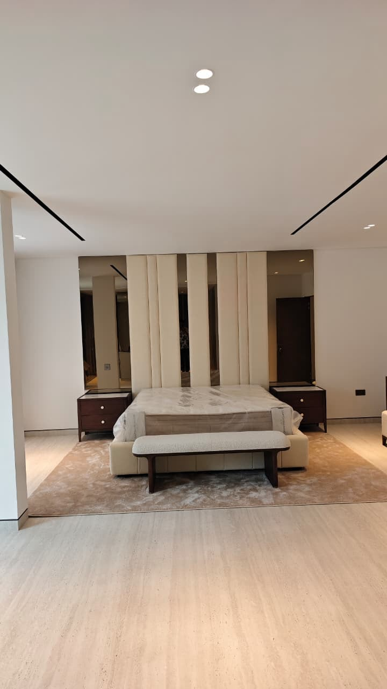
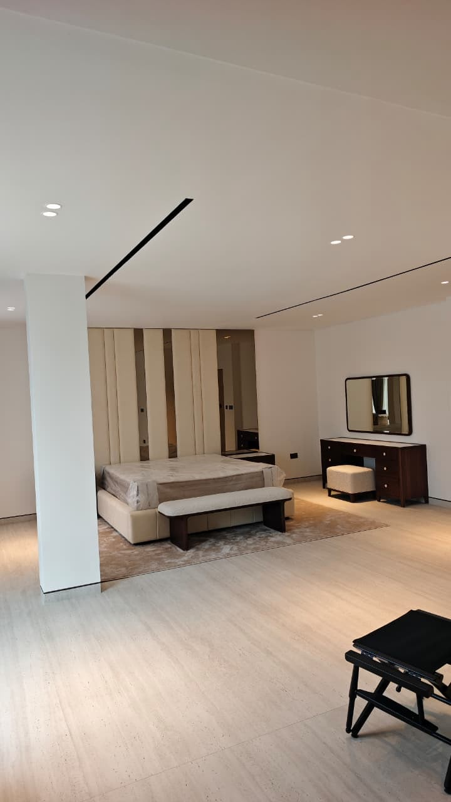
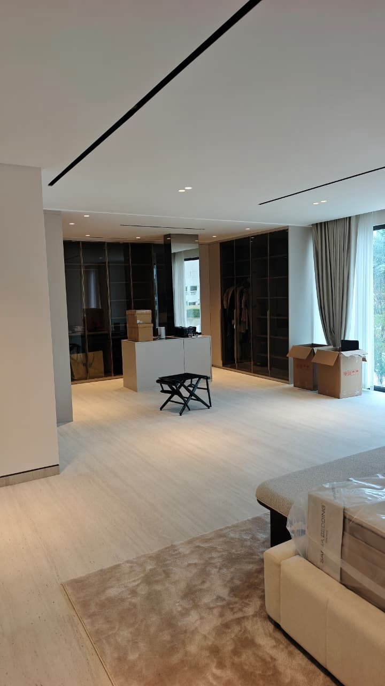
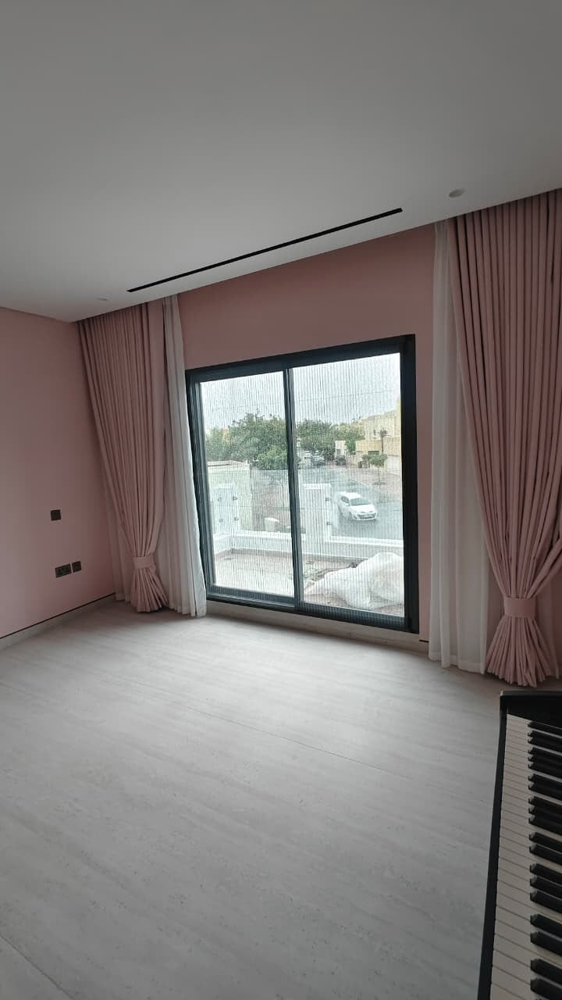
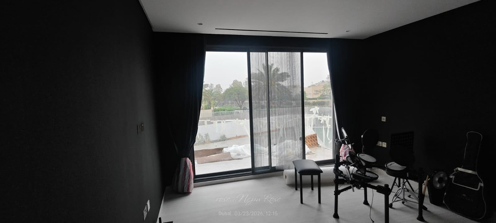
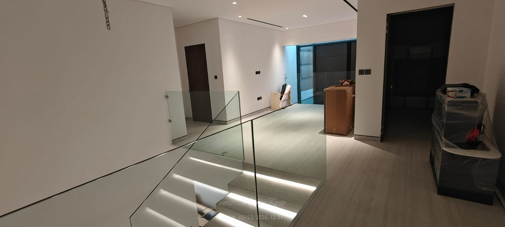
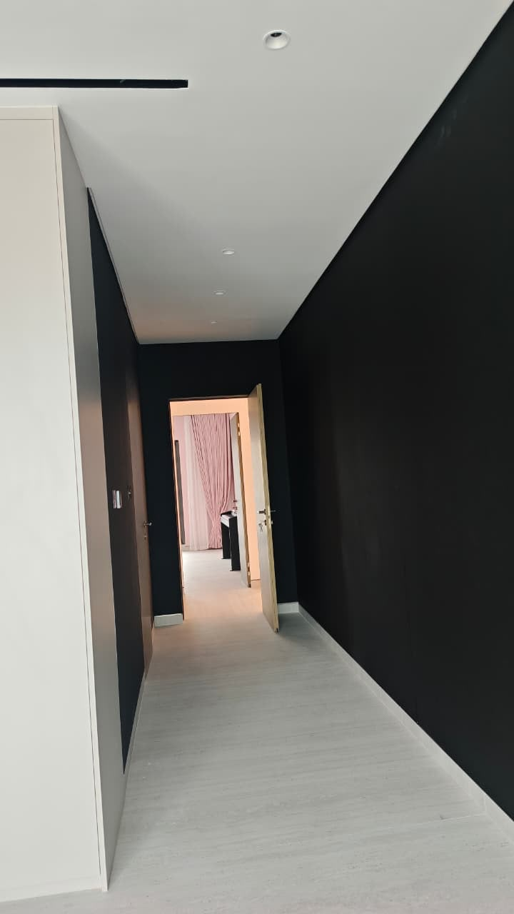
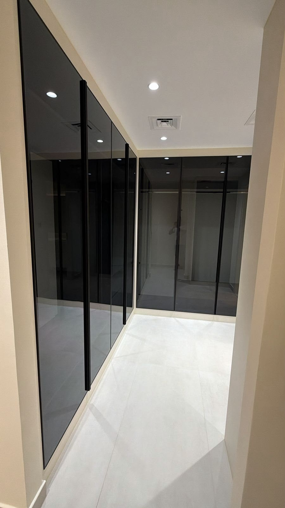

Residential
Living Rooms and Bedrooms
We turn bedrooms, living areas and corridors into calm, modern spaces with feature walls, built-in glass wardrobes, concealed ceiling lighting and new flooring. The result is a brighter, more open home with storage built in, so every room stays tidy.